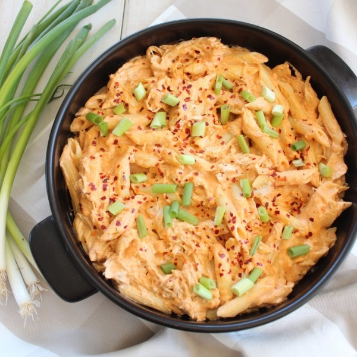

Buffalo Chicken Pastas Recipe

Description
This easy Buffalo Chicken Pasta recipe is made in just 29 minutes on the stovetop by adding shredded chicken and penne pasta to the most amazing creamy, cheesy sauce, filled with two cheeses, buffalo sauce and spices!
Ingredients
- Shredded Chicken Breasts
- Cream Cheese
- Buffalo Sauce
- Chicken Broth
- Paprika
- Garlic Powder
- Black Pepper
- Kosher Salt
- Blue Cheese Dressing
- Uncooked Penne Pasta
- Green Onions
- Crushed Red Pepper Flakes
Steps
- Prepare the cheesy buffalo sauce. In a large pot or skillet on the stove over medium heat, add cream cheese, buffalo sauce and chicken broth. Whisk the ingredients together until the sauce is smooth and creamy.
- Spice up the sauce! Add paprika, garlic powder, black pepper and salt. Stir to combine.
- Make it creamy! Add blue cheese or ranch dressing to the sauce. Stir the sauce together until it’s smooth and creamy.
- Add the chicken. Add cooked, shredded chicken to the sauce, reduce the heat on the stove to low, then allow the sauce to simmer for 10 minutes.
- Cook the pasta. Add penne pasta to a large pot of boiling water on the stove. Cook according to package directions, then drain the pasta and add it to the buffalo chicken sauce.
- Finish and serve. Top the pasta with diced green onions and crushed red pepper flakes, if you’d like and serve immediately.